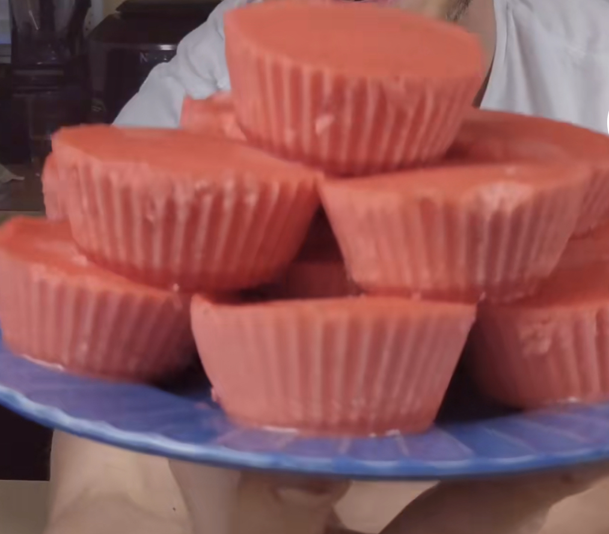

Description
At only 28 calories and 4.5 grams of protein per serving, these strawberry protein cups are a weight loss cheat code for anyone with a sweet tooth and are a fruity fudge alternative perfect for summer fun. Let's get started!
Ingredients
- 3.5 cups strawberries
- 4 scoops strawberry protein powder
- 3/4 cup zero-calorie sweetner (I recommend monkfruit)
- 1.75 cups egg whites
- 1 cup skim milk
- 1 tbsp vanilla extract
- Pinch of salt
- Red food coloring (optional)
Steps
- Combine ingredients into a blender and blend until smooth.
- Pour mixture into 36 cupcake molds.
- Freeze for 24 hours. Store in refrigerated, sealed container.